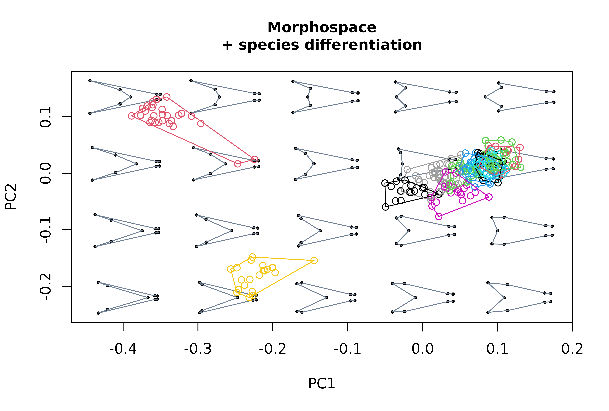
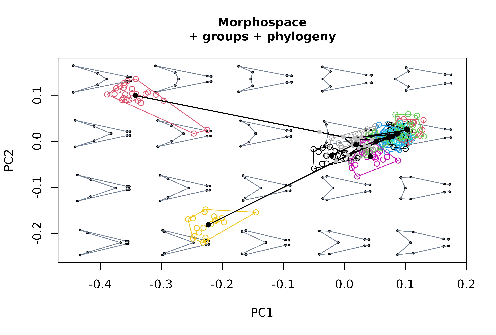
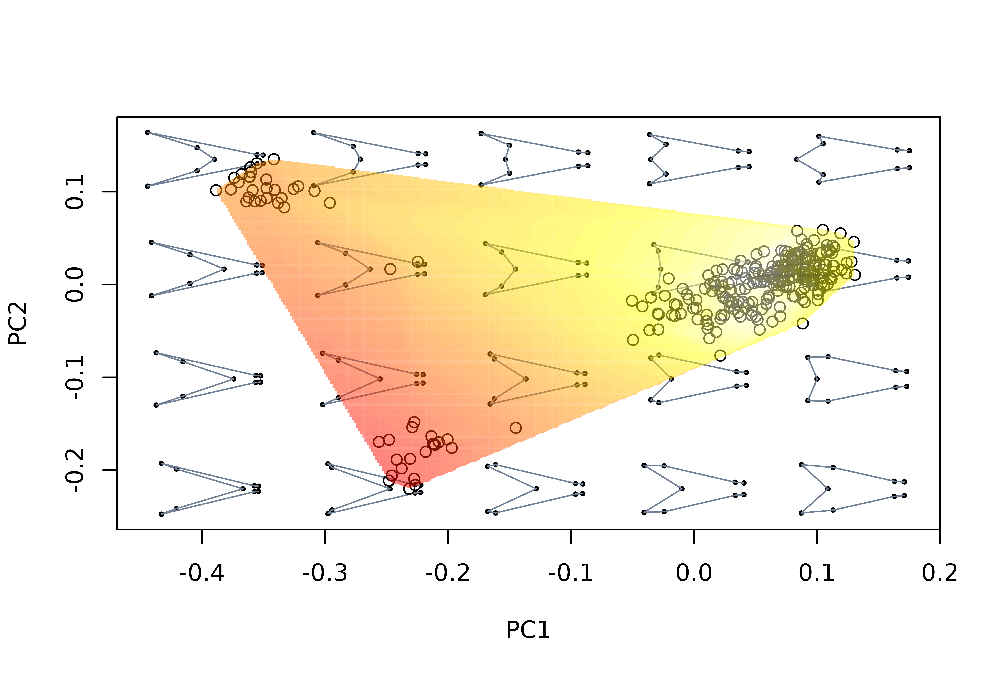
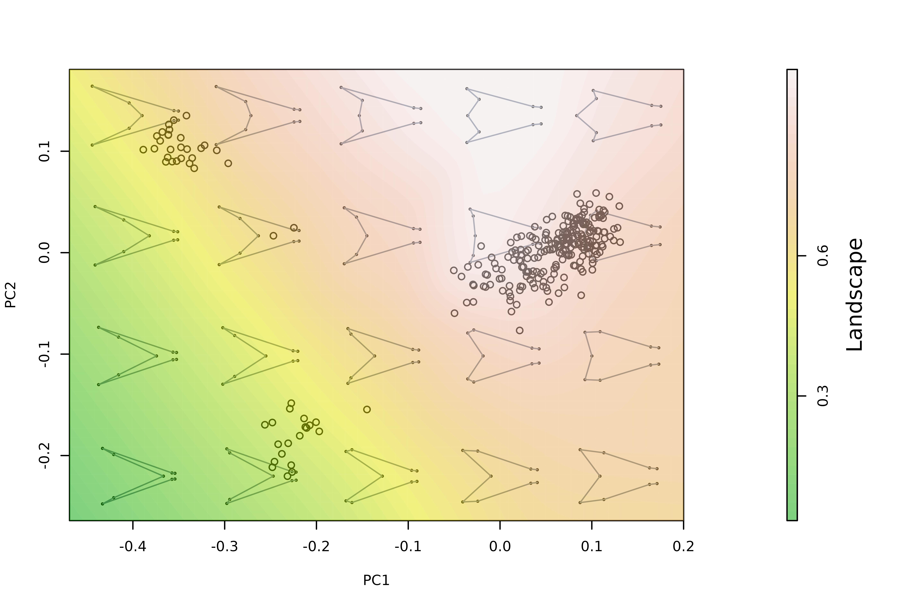
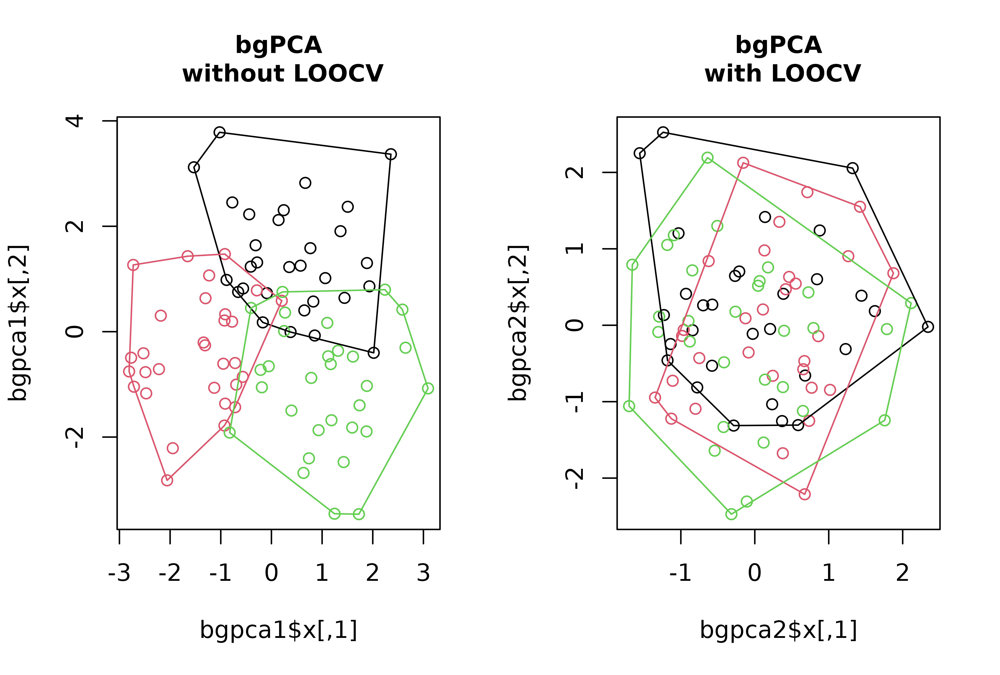
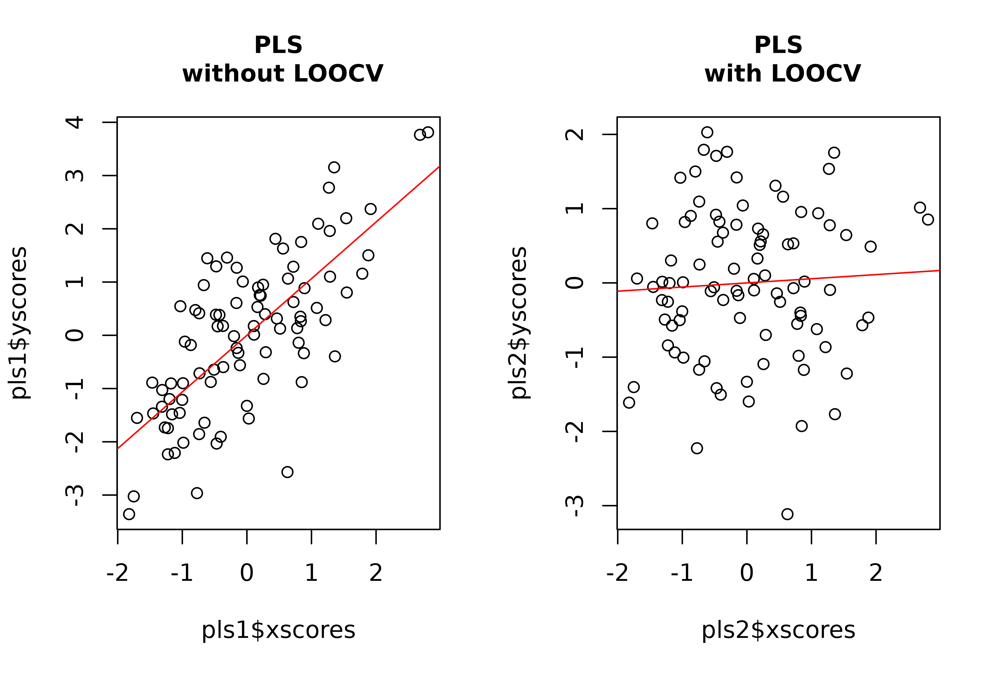
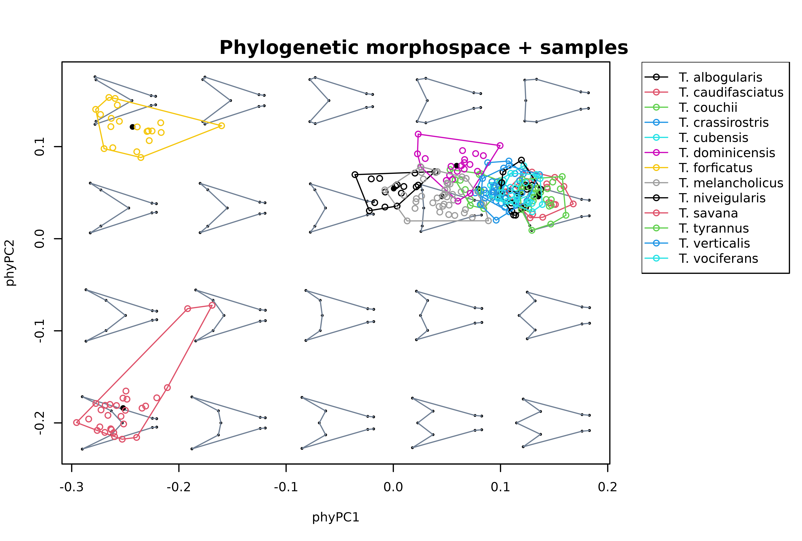

morphospace has been built to work in intergration with
other widely used R packages covering other more essential steps in the
geometric morphometrics pipeline (e.g. importation, normalization,
statistical analysis) such as Morpho (Schlager 2017),
geomorph (Adams et al. 2021), shapes (Dryden
2019), and Momocs (Bonhome et al. 2014).
The basic idea behind morphospace is to build empirical
morphospaces using multivariate methods, then use the resulting
ordination as a reference frame in which elements representing different
aspects of morphometric variation can projected. This workflow is
outlined below using the tails data set from Fasanelli et
al. (2022), which contains a sample of tail shapes from the 13 species
of the genus Tyrannus (kingbirds and flycatchers). Two of these
(the flycatchers T. savana and T. forficatus) display
exaggeratedly elongated tails, as well as a considerable allometric
variation and sexual dimorphism. The tails data set
contains landmark data and centroid sizes from the tails of 281
specimens, their classification to species, sex and type (deep-forked,
DF or non deep-forked, NDF), and their phylogenetic relationships (see
Fasanelli et al. 2022 and references therein). The links between
landmarks have been also included to improve visualization.
# Load tail data and extract shapes, centroid sizes, classification of sex
# and species, links between landmarks, and phylogenetic tree
data("tails")
shapes <- tails$shapes
sizes <- log(tails$sizes)
spp <- tails$data$species
sex <- tails$data$sex
wf <- tails$links
phy <- tails$treeWorkflow
The starting point of this workflow is morphometric data that is
already free of differences in orientation, position and scale (this
standardization can be implemented using functions provided by the
aforementioned R packages). However, morphospace provide
some alternatives to perform some basic operations on shape data, such
as the calculation of mean shapes or the analytical removal of undesired
sources of variation (functions expected_shapes and
detrend_shapes, respectively). For example, we can to get
rid of sexual dimorphism before moving forward.
# Remove variation associated with sexual dimorphism and compute the
# consensus shape of each species
model <- lm(two.d.array(shapes) ~ sex)
detr_shapes <- detrend_shapes(model, method = "residuals") %>%
arrayspecs(p = nrow(shapes), k = ncol(shapes))
sp_shapes <- expected_shapes(shapes = detr_shapes, x = spp)Once the shape data is ready, we build a morphospace using the
mspace function and then use the resulting ordination as a
canvas in which to project different elements depicting various aspects
of morphometric variation (scatter points, groups centroids, convex
hulls, confidence ellipses, a phylogeny, etc). These elements are added
both to the plot and the "mspace" object as consecutive
‘layers’ and list slots, respectively, using the proj_*
family of functions and the %>% pipe operator from the
magrittr package (Bache & Wickham 2022).
# Generate morphospace using detrended shapes, project specimens
msp1 <- mspace(detr_shapes, links = wf, cex.ldm = 5) %>%
proj_shapes(shapes = detr_shapes)
title("Morphospace", cex.main = 1)
# Generate morphospace, project specimens and delimit species' ranges
# of variation using convex hulls
msp2 <- mspace(detr_shapes, links = wf, cex.ldm = 5) %>%
proj_shapes(shapes = detr_shapes, col = spp) %>%
proj_groups(shapes = detr_shapes, groups = spp)
title("Morphospace\n+ species differentiation", cex.main = 1)
# Generate morphospace, project specimens, delimit groups of them
# with convex hulls, project phylogenetic tree (requires a "phy"
# object)
msp3 <- mspace(shapes = detr_shapes, links = wf, cex.ldm = 5) %>%
proj_shapes(shapes = detr_shapes, col = spp) %>%
proj_groups(shapes = detr_shapes, groups = spp) %>%
proj_phylogeny(shapes = sp_shapes, tree = phy, lwd = 1.5)
title("Morphospace\n+ groups + phylogeny", cex.main = 1)
# Check the elements projected in each mspace object, note the slots
# corresponding to projected scores, groups classification and scores
# included on each, the phylogenetic tree and scores for nodes and tips.
names(msp1$projected)
#> [1] "shapemodels" "scores"
names(msp2$projected)
#> [1] "shapemodels" "scores" "gr_class" "gr_scores"
names(msp3$projected)
#> [1] "shapemodels" "scores" "gr_class" "gr_scores" "phylo_scores"
#> [6] "phylo"Another potentially interesting element that can be projected into morphospaces are morphometric axes or phenotypic change vectors, i.e. synthetic axes built as linear combinations of shape variables that describe a linear path across the morphospace. For example, we can project the first two PC axes resulting from a PCA of NDF specimens data into our morphospace.
# perform PCA of refined shape variables (for the subset of NDF species), create
# morphospace, and project the first 2 axes from the former into the latter
pca <- prcomp(two.d.array(detr_shapes[,,tails$data$type == "NDF"]))
mspace(detr_shapes, links = wf, cex.ldm = 5) %>%
proj_shapes(shapes = detr_shapes, col = spp) %>%
proj_groups(shapes = detr_shapes, groups = spp) %>%
proj_phylogeny(shapes = sp_shapes, tree = phy, pch.tips = 16) %>%
proj_axis(obj = pca, axis = 1, mag = 1, col = "red", lwd = 3, lty = 1) %>%
proj_axis(obj = pca, axis = 2, mag = 1, col = "red", lwd = 3, lty = 2)
title("Morphospace\n+ PC1 and PC2 of NDF species projected", cex.main = 1)Finally, landscape surfaces intended to represent functional or
performance measurements can be projected as contour maps with
proj_landscape. These surfaces are interpolated using the
akima package (Akima & Gebhardt 2022) from values
provided directly through the argument X and corresponding
to the shapes provided through the shapes argument, or
computed through the latter using an arbitrary function, provided using
the argument FUN.
These landscapes can be computed for either a region of the
morphospace from a sample of empirical shapes occupying that region
(“empirical landscapes”) or from the set of synthetic shapes
mapping morphometric variation in the background (“theoretical
landscapes”). For the latter case, leave
shapes = NULL; if values are been provided using
X these must have been computed beforehand and arranged in
the same order as the shape models in the background (that is, from left
to right and from bottom to top), which can be extracted using
extract_shapes. This last step is not necessary if
FUN is provided. A scalebar can be added using
plot_mspace and scalebar = TRUE.
# compute lift/drag ratio for each tail in the data set
library(Momocs)
LDs <- apply(two.d.array(detr_shapes), 1, morphospace:::computeLD)
# use LDs values to project an empirical landscape
mspace(detr_shapes, links = wf, cex.ldm = 5) %>%
proj_shapes(shapes = detr_shapes) %>%
proj_landscape(shapes = detr_shapes, X = LDs, linear = TRUE,
display = "filled.contour", resolution = 300)
# project theoretical landscape, this time using the argument FUN to run
# the computeLD function through the set of background shape models
mspl <- mspace(detr_shapes, links = wf, cex.ldm = 5) %>%
proj_shapes(shapes = detr_shapes) %>%
proj_landscape(shapes = NULL, FUN = morphospace::: computeLD, linear = FALSE,
display = "contour", lwd = 2)
# a scale bar can be added (and changes introduced) by regenerating the
# "mspace" object with plot_mspace
plot_mspace(mspl, display.landsc = "filled.contour",
palette.landsc = terrain.colors, scalebar = TRUE)
(Note: using the FUN argument is the easy
way to do this, but it needs a function that can go through every shape
as stored in a 2-margin matrix in which each row is a shape and each
column is a shape descripor (e.g. the output from
geomorph::two.d.array))
Ordination methods
The default settings of mspace rely on the
prcomp function from the stats package to
build the synthetic morphometric space. However,
morphospace also provides functions for ‘supervised’
ordination, namely phylogenetic PCA (Revell 2009) (implemented through
the phy_prcomp function, which wraps phyl.pca
from phytools, Revell 2012), between-groups PCA
(bg_prcomp function), and both ordinary and phylgenetic
versions of Partial Least Squares (PLS) (pls_shapes
function [an user-friendly wrapper of pls2b, which is used
in the following chunk]). These have been styled/wrapped to share format
with prcomp, and both bgPCA and PLS functions allow for
leave-one-out cross-validation (LOOCV), which alleviates some spurious
patterns that arise when the number of variables exceeds the number of
samples (as it is common in geometric morphometric analyses; see Cardini
et al. 2019 and Cardini & Polly 2020).
# Simulate 100 random normal distributions, and add an artificial classification
# and an artificial covariate
set.seed(123)
random_y <- do.call("cbind", lapply(1:100, function(i) {rnorm(90)}))
class <- factor(rep(c("A", "B", "C"), each = 30))
random_x <- rnorm(90)
# Perform bgPCA on the set of random variables to look for the bgPCs maximizing
# separation between artificial groups, with and without LOOCV
layout(rbind(c(1,2)))
bgpca1 <- bg_prcomp(x = random_y, groups = class)
plot(bgpca1$x, col = c(1:3)[class])
hulls_by_group_2D(bgpca1$x, class)
title("bgPCA\n without LOOCV", cex.main = 1)
bgpca2 <- bg_prcomp(x = random_y, groups = class, LOOCV = TRUE)
plot(bgpca2$x, col = c(1:3)[class])
hulls_by_group_2D(bgpca2$x, class)
title("bgPCA\n with LOOCV", cex.main = 1)
# Perform PLS on the set of random variables to look for the PLS axis maximzing
# covariation between them and the artificial covariate, with and without LOOCV
layout(rbind(c(1,2)))
pls1 <- pls2b(x = random_x, y = random_y)
plot(pls1$xscores, pls1$yscores)
abline(lm(pls1$yscores ~ pls1$xscores), col = "red")
title("PLS\n without LOOCV", cex.main = 1)
pls2 <- pls2b(x = random_x, y = random_y, LOOCV = TRUE)
plot(pls2$xscores, pls2$yscores)
abline(lm(pls2$yscores ~ pls2$xscores), col = "red")
title("PLS\n with LOOCV", cex.main = 1)
These methods can be used instead of regular PCA for building
morphospaces via the FUN and ... arguments
(adding the argument groups for bg_prcomp,
tree for phy_prcomp, and X [and
potentially also a tree] for pls_shapes,
respectively) of the mspace function. The resulting
morphospace can be combined with the proj_* functions in
the same way as before.
# Between group PCA - all species (invert both axes for easier comparison with
# previous plots). We'll use plot_mspace to add a legend:
mspace(detr_shapes, FUN = bg_prcomp, LOOCV = TRUE, groups = spp,
links = wf, invax = c(1,2), cex.ldm = 5, plot = FALSE) %>%
proj_shapes(shapes = detr_shapes, col = spp) %>%
proj_groups(shapes = detr_shapes, groups = spp) %>%
proj_shapes(shapes = sp_shapes, col = "black", pch = 16) %>%
plot_mspace(legend = TRUE)
title("Morphospace emphasizing interspecific variation", cex.main = 1)
# Phylogenetic PCA for all species, adding projection of intrapspecific variation,
# add legend
mspace(sp_shapes, FUN = phy_prcomp, tree = phy, links = wf,
xlim = c(-0.25, 0.15), ylim = c(-0.2, 0.15), cex.ldm = 5, plot = FALSE) %>%
proj_shapes(shapes = detr_shapes, col = spp) %>%
proj_groups(shapes = detr_shapes, groups = spp) %>%
proj_shapes(shapes = sp_shapes, col = "black", pch = 16) %>%
plot_mspace(legend = TRUE)
title("Phylogenetic morphospace + samples", cex.main = 1)
Flexible visualization
Finally, "mspace" objects created using the
mspace %>% proj_* pipeline can be regenerated/modified
with the plot_mspace function, which adds further graphical
flexibility. By plotting a "mspace" object using this
function we can regenerate an existing morphospace as it was created;
alternatively, we can select a different set of axes to plot, choose
other colors and symbols for points, groups, etc (or not), or add a
legend (see chunk above). In addition, this function also allow
combining morphometric axes with other non-shape variables to produce
‘hybrid’ morphospaces.
For example, PC1 can be plotted against size to explore allometric patterns:
# Build morphospace first
msp <- mspace(shapes = detr_shapes, links = wf, cex.ldm = 5, plot = FALSE) %>%
proj_shapes(shapes = detr_shapes, col = spp) %>%
proj_groups(shapes = detr_shapes, groups = spp) %>%
proj_phylogeny(shapes = sp_shapes, tree = phy, col.tips = match(phy$tip.label, levels(spp)))
# Plot PC1 against log-size, add legend
plot_mspace(msp, x = sizes, axes = 1, nh = 6, nv = 6, cex.ldm = 4,
col.points = spp, col.groups = 1:nlevels(spp), xlab = "Log-size",
legend = TRUE)Or we can combine PC1 (or any other PC axis) with the phylogenetic tree to create a phenogram:
# Plot vertical phenogram using PC1, add a legend
plot_mspace(msp, y = phy, axes = 1, nh = 6, nv = 6, cex.ldm = 4,
col.groups = 1:nlevels(spp), ylab = "Time", legend = TRUE)(Note: that legend’ labels are taken from the factor provided in
the groups argument from
proj_groups, whereas symbols and colors are taken
from proj_shapes and proj_groups
graphical parameters)
References
Adams D.C., Collyer M.L., Kaliontzopoulou A., & Baken E.K. (2021). geomorph: Software for geometric morphometric analyses. R package version 4.0.2. https://cran.r-project.org/package=geomorph.
Akima H., & Gebhardt A. (2022). akima: Interpolation of Irregularly and Regularly Spaced Data. R package version 0.6-3.4 https://CRAN.R-project.org/package=akima.
Bache S.F., & Wickham H. (2022). magrittr: A Forward-Pipe Operator for R. R package version 2.0.3. https://CRAN.R-project.org/package=magrittr.
Bonhomme V., Picq S., Gaucherel C., & Claude J. (2014). Momocs: Outline Analysis Using R. Journal of Statistical Software, 56(13), 1-24. http://www.jstatsoft.org/v56/i13/.
Cardini A., O’Higgins P., & Rohlf F.J. (2019). Seeing distinct groups where there are none: spurious patterns from between-group PCA. Evolutionary Biology, 46(4), 303-316. https://doi.org/10.1007/s11692-019-09487-5.
Cardini A., & Polly P. D. (2020). Cross-validated between group PCA scatterplots: A solution to spurious group separation?. Evolutionary Biology, 47(1), 85-95. https://doi.org/10.1007/s11692-020-09494-x.
Dryden, I.L. (2019). shapes: statistical shape analysis. R package version 1.2.5. https://CRAN.R-project.org/package=shapes.
Fasanelli M.N., Milla Carmona P.S., Soto I.M., & Tuero, D.T. (2022). Allometry, sexual selection and evolutionary lines of least resistance shaped the evolution of exaggerated sexual traits within the genus Tyrannus. Journal of Evolutionary Biology, in press. https://doi.org/10.1111/jeb.14000.
Revell, L.J. (2009). Size-correction and principal components for interspecific comparative studies. Evolution, 63, 3258-3268 https://doi.org/10.1111/j.1558-5646.2009.00804.x.
Revell, L.J. (2012). phytools: An R package for phylogenetic comparative biology (and other things). Methods in Ecology and Evolution 3, 217-223. https://doi.org/10.1111/j.2041-210X.2011.00169.x.
Schlager S. (2017). Morpho and Rvcg - Shape Analysis in R. In Zheng G., Li S., Szekely G. (eds.), Statistical Shape and Deformation Analysis, 217-256. Academic Press. https://doi.org/10.1016/B978-0-12-810493-4.00011-0.